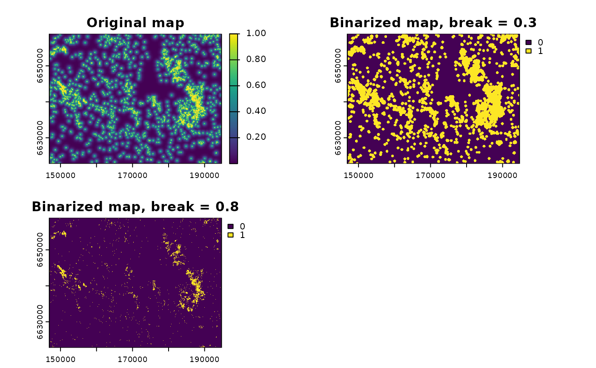
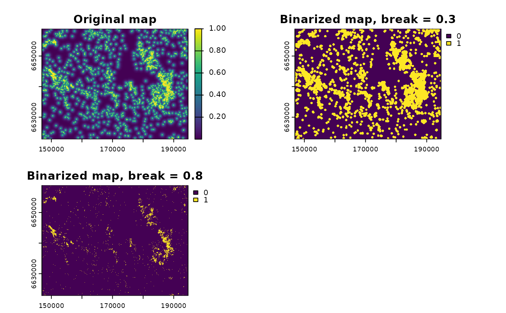

Through GRASS GIS, this function transforms continuous or categorical maps (with more than 1 category) into binary maps (with only two values), to represent, e.g., habitat-matrix maps in the context of landscape ecology. It can also be used to produce binary maps form maps with only one category (and all the rest as NULL/no-data). It requires an active connection between the R session and a GRASS GIS location and mapset (through the package rgrass), and that the input map is already loaded within this GRASS GIS mapset.
Arguments
- x
[character(1)]
Name of the input raster map, within a GRASS GIS location and mapset.- breaks
[numeric]
Breaks or threshold to define the binary values in the output binary map. All pixels withvalue >= breaksare considered as 1 (or the upper value defined inbin_values), and all the rest are considered as 0 (or the lower value defined inbin_values).breaksmight be either a single numeric value or a vector of numeric values, in which case multiple binary maps are created (with different break thresholds).- output
[character(1)]
Name of the output map, or prefix of the output map iflength(breaks) > 1. In the latter case, the names are completed with the break value. The defult is to use the same name as the input map, plus "_bin" in the end.- null
[numeric(1)=NULL]
IfNULL(default), all NULL/no-data pixels in fromxare kept as they are in the output map. Otherwise, a numeric value that all NULL pixels should assume in the output map. It uses the module r.null).- setnull
[]
IfNULL(default), no changes are made. Otherwise, a set of numeric values that should be transformed into NULL/NA data (using the module r.null).- bin_values
[numeric(2)=c(0,1)]
Values c(lower, upper) that the output map pixels should have if their values are either "lower" or "equal or higher"breaks. By default, c(0, 1).- input_as_region
[logical(1)=FALSE]
Should the input mapxbe used to redefine the working region in GRASS before raster binarization? IfTRUE,xis used to define the region withg.region. IfFALSE, the region previously defined in the GRASS GIS session is used for computation. Default isFALSE.- verbose
[logical(1)=FALSE]
Should messages of the computation steps be printed in the prompt along the computation?- overwrite
[logical(1)]
Whether the output maps should be overwriten (flagoverwrite = TRUE).
Value
A binarized map with only two values (or a set of binarized maps if length(breaks) > 1)
within the GRASS GIS mapset. In R, the output is a string with the name of this
map.
Details
For a similar procedure within R, use raster algebra functions within the raster and terra packages.
Examples
# libraries
library(rgrass)
library(terra)
# Load raster data
f <- system.file("raster/sample_area_cabins.tif", package = "oneimpact")
cabins <- terra::rast(f)
# connect to grass gis and create grass location
# For linux or within OSGeo4W shell
grassdir <- system("grass --config path", intern = TRUE)
# grassdir <- system("grass78 --config path", intern = TRUE) # for GRASS 7.8
# If you used the standalone installer in Windows
# grassdir <- "C:\Programs\GRASS GIS 7.8" # Correct if the path GRASS version or path is different
gisDB <- "." # create location and mapset in the working directory
loc <- "ETRS_33N/" # name of the location
ms <- "PERMANENT" # name of the mapset
rgrass::initGRASS(gisBase = grassdir,
SG = cabins, # use map to define location projection
home = tempdir(),
override = TRUE,
gisDbase = gisDB,
location = loc,
mapset = ms)
#> gisdbase .
#> location ETRS_33N/
#> mapset PERMANENT
#> rows 361
#> columns 478
#> north 6658900
#> south 6622800
#> west 146900
#> east 194700
#> nsres 100
#> ewres 100
#> projection:
#> PROJCRS["unknown",
#> BASEGEOGCRS["grs80",
#> DATUM["European Terrestrial Reference System 1989",
#> ELLIPSOID["Geodetic_Reference_System_1980",6378137,298.257222101,
#> LENGTHUNIT["metre",1]],
#> ID["EPSG",6258]],
#> PRIMEM["Greenwich",0,
#> ANGLEUNIT["degree",0.0174532925199433,
#> ID["EPSG",9122]]]],
#> CONVERSION["Transverse Mercator",
#> METHOD["Transverse Mercator",
#> ID["EPSG",9807]],
#> PARAMETER["Latitude of natural origin",0,
#> ANGLEUNIT["degree",0.0174532925199433],
#> ID["EPSG",8801]],
#> PARAMETER["Longitude of natural origin",15,
#> ANGLEUNIT["degree",0.0174532925199433],
#> ID["EPSG",8802]],
#> PARAMETER["Scale factor at natural origin",0.9996,
#> SCALEUNIT["unity",1],
#> ID["EPSG",8805]],
#> PARAMETER["False easting",500000,
#> LENGTHUNIT["metre",1],
#> ID["EPSG",8806]],
#> PARAMETER["False northing",0,
#> LENGTHUNIT["metre",1],
#> ID["EPSG",8807]]],
#> CS[Cartesian,2],
#> AXIS["easting",east,
#> ORDER[1],
#> LENGTHUNIT["metre",1,
#> ID["EPSG",9001]]],
#> AXIS["northing",north,
#> ORDER[2],
#> LENGTHUNIT["metre",1,
#> ID["EPSG",9001]]]]
# add map to GRASS
rgrass::write_RAST(cabins, "cabins", flags = "o")
#> Over-riding projection check
#> Importing raster map <cabins>...
#> 0% 3% 6% 9% 12% 15% 18% 21% 24% 27% 30% 33% 36% 39% 42% 45% 48% 51% 54% 57% 60% 63% 66% 69% 72% 75% 78% 81% 84% 87% 90% 93% 96% 99% 100%
#> SpatRaster read into GRASS using r.in.gdal from file
# binarize the input map
# map with only 1
cabins_bin1_name <- grass_binarize("cabins", output = "cabins_bin1",
breaks = 1, overwrite = T)
# map with 0, 1
cabins_bin2_name <- grass_binarize("cabins", output = "cabins_bin2",
breaks = 1, null = 0, overwrite = T)
#> Removing raster <inter_map>
# visualize
cabins_bin1_2 <- rgrass::read_RAST(c(cabins_bin1_name, cabins_bin2_name),
return_format = "terra", NODATA = 255)
#> Checking GDAL data type and nodata value...
#> 2% 5% 8% 11% 14% 17% 20% 23% 26% 29% 32% 35% 38% 41% 44% 47% 50% 53% 56% 59% 62% 65% 68% 71% 74% 77% 80% 83% 86% 89% 92% 95% 98% 100%
#> Using GDAL data type <Byte>
#> Exporting raster data to RRASTER format...
#> 2% 5% 8% 11% 14% 17% 20% 23% 26% 29% 32% 35% 38% 41% 44% 47% 50% 53% 56% 59% 62% 65% 68% 71% 74% 77% 80% 83% 86% 89% 92% 95% 98% 100%
#> r.out.gdal complete. File </tmp/RtmpRwpIue/file380b4d8d792a.grd> created.
#> Checking GDAL data type and nodata value...
#> 2% 5% 8% 11% 14% 17% 20% 23% 26% 29% 32% 35% 38% 41% 44% 47% 50% 53% 56% 59% 62% 65% 68% 71% 74% 77% 80% 83% 86% 89% 92% 95% 98% 100%
#> Using GDAL data type <Byte>
#> Exporting raster data to RRASTER format...
#> 2% 5% 8% 11% 14% 17% 20% 23% 26% 29% 32% 35% 38% 41% 44% 47% 50% 53% 56% 59% 62% 65% 68% 71% 74% 77% 80% 83% 86% 89% 92% 95% 98% 100%
#> r.out.gdal complete. File </tmp/RtmpRwpIue/file380b70033903.grd> created.
plot(cabins_bin1_2, main = c("Binarized map keeping null", "Binarized map setting null to 0"))
 #-------
# binarize the map with multiple break values
# first create a continuous map
cont_map_name <- calc_zoi_nearest("cabins_bin1", radius = 1000,
type = "exp_decay",
where = "GRASS", overwrite = TRUE)
#> Removing raster <cabins_bin1_zoi_nearest_euclidean>
# binarize
cabins_bin2vals_name <- grass_binarize(cont_map_name, output = "cabins_zoi1000_bin",
breaks = c(0.3, 0.8), overwrite = T)
# visualize
cabins_bin2vals <- rgrass::read_RAST(c(cont_map_name, cabins_bin2vals_name),
return_format = "terra", NODATA = 255)
#> Checking GDAL data type and nodata value...
#> 2% 5% 8% 11% 14% 17% 20% 23% 26% 29% 32% 35% 38% 41% 44% 47% 50% 53% 56% 59% 62% 65% 68% 71% 74% 77% 80% 83% 86% 89% 92% 95% 98% 100%
#> Using GDAL data type <Float64>
#> Exporting raster data to RRASTER format...
#> 2% 5% 8% 11% 14% 17% 20% 23% 26% 29% 32% 35% 38% 41% 44% 47% 50% 53% 56% 59% 62% 65% 68% 71% 74% 77% 80% 83% 86% 89% 92% 95% 98% 100%
#> r.out.gdal complete. File </tmp/RtmpRwpIue/file380b4c54a67b.grd> created.
#> Checking GDAL data type and nodata value...
#> 2% 5% 8% 11% 14% 17% 20% 23% 26% 29% 32% 35% 38% 41% 44% 47% 50% 53% 56% 59% 62% 65% 68% 71% 74% 77% 80% 83% 86% 89% 92% 95% 98% 100%
#> Using GDAL data type <Byte>
#> Exporting raster data to RRASTER format...
#> 2% 5% 8% 11% 14% 17% 20% 23% 26% 29% 32% 35% 38% 41% 44% 47% 50% 53% 56% 59% 62% 65% 68% 71% 74% 77% 80% 83% 86% 89% 92% 95% 98% 100%
#> r.out.gdal complete. File </tmp/RtmpRwpIue/file380b7521e226.grd> created.
#> Checking GDAL data type and nodata value...
#> 2% 5% 8% 11% 14% 17% 20% 23% 26% 29% 32% 35% 38% 41% 44% 47% 50% 53% 56% 59% 62% 65% 68% 71% 74% 77% 80% 83% 86% 89% 92% 95% 98% 100%
#> Using GDAL data type <Byte>
#> Exporting raster data to RRASTER format...
#> 2% 5% 8% 11% 14% 17% 20% 23% 26% 29% 32% 35% 38% 41% 44% 47% 50% 53% 56% 59% 62% 65% 68% 71% 74% 77% 80% 83% 86% 89% 92% 95% 98% 100%
#> r.out.gdal complete. File </tmp/RtmpRwpIue/file380b5d049581.grd> created.
plot(cabins_bin2vals,
main = c("Original map",
"Binarized map, break = 0.3",
"Binarized map, break = 0.8"))

#-------
# binarize the map with multiple break values
# first create a continuous map
cont_map_name <- calc_zoi_nearest("cabins_bin1", radius = 1000,
type = "exp_decay",
where = "GRASS", overwrite = TRUE)
#> Removing raster <cabins_bin1_zoi_nearest_euclidean>
# binarize
cabins_bin2vals_name <- grass_binarize(cont_map_name, output = "cabins_zoi1000_bin",
breaks = c(0.3, 0.8), overwrite = T)
# visualize
cabins_bin2vals <- rgrass::read_RAST(c(cont_map_name, cabins_bin2vals_name),
return_format = "terra", NODATA = 255)
#> Checking GDAL data type and nodata value...
#> 2% 5% 8% 11% 14% 17% 20% 23% 26% 29% 32% 35% 38% 41% 44% 47% 50% 53% 56% 59% 62% 65% 68% 71% 74% 77% 80% 83% 86% 89% 92% 95% 98% 100%
#> Using GDAL data type <Float64>
#> Exporting raster data to RRASTER format...
#> 2% 5% 8% 11% 14% 17% 20% 23% 26% 29% 32% 35% 38% 41% 44% 47% 50% 53% 56% 59% 62% 65% 68% 71% 74% 77% 80% 83% 86% 89% 92% 95% 98% 100%
#> r.out.gdal complete. File </tmp/RtmpRwpIue/file380b4c54a67b.grd> created.
#> Checking GDAL data type and nodata value...
#> 2% 5% 8% 11% 14% 17% 20% 23% 26% 29% 32% 35% 38% 41% 44% 47% 50% 53% 56% 59% 62% 65% 68% 71% 74% 77% 80% 83% 86% 89% 92% 95% 98% 100%
#> Using GDAL data type <Byte>
#> Exporting raster data to RRASTER format...
#> 2% 5% 8% 11% 14% 17% 20% 23% 26% 29% 32% 35% 38% 41% 44% 47% 50% 53% 56% 59% 62% 65% 68% 71% 74% 77% 80% 83% 86% 89% 92% 95% 98% 100%
#> r.out.gdal complete. File </tmp/RtmpRwpIue/file380b7521e226.grd> created.
#> Checking GDAL data type and nodata value...
#> 2% 5% 8% 11% 14% 17% 20% 23% 26% 29% 32% 35% 38% 41% 44% 47% 50% 53% 56% 59% 62% 65% 68% 71% 74% 77% 80% 83% 86% 89% 92% 95% 98% 100%
#> Using GDAL data type <Byte>
#> Exporting raster data to RRASTER format...
#> 2% 5% 8% 11% 14% 17% 20% 23% 26% 29% 32% 35% 38% 41% 44% 47% 50% 53% 56% 59% 62% 65% 68% 71% 74% 77% 80% 83% 86% 89% 92% 95% 98% 100%
#> r.out.gdal complete. File </tmp/RtmpRwpIue/file380b5d049581.grd> created.
plot(cabins_bin2vals,
main = c("Original map",
"Binarized map, break = 0.3",
"Binarized map, break = 0.8"))
